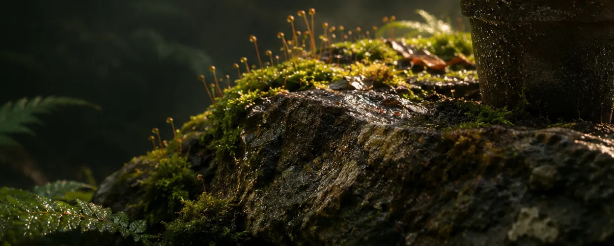

The Living Atelier / 001
Form, before
the first cut.
A design laboratory for Tree 01. Explore possible stone silhouettes and root trajectories. All geometry is illustrative; none represents work already performed.

Conceptual stone study · Candidate rock not selectedTree 01 / Root-over-rock
The stone
comes first.
Proposed / Not installed
Vertical emphasis: investigate a narrow stone with an ascending outline. Root position and rock dimensions are unknown.
The three line drawings are compositional proposals, not scans of any real tree or stone.
Method / Observe first
An experiment
not yet begun.
Root-over-rock design is a multi-year horticultural decision, not a filter applied to a photograph. Before working with the roots, the tree, season, stone, and root structure must be assessed.
Return to Tree 01